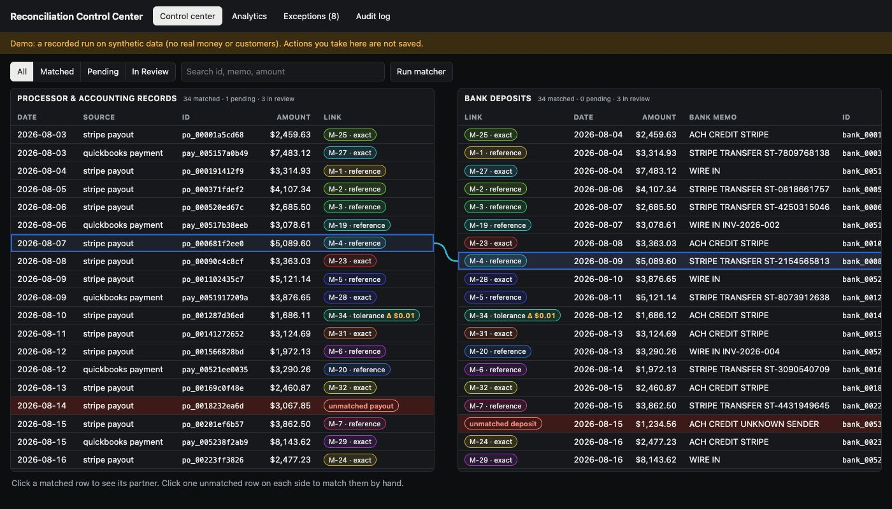
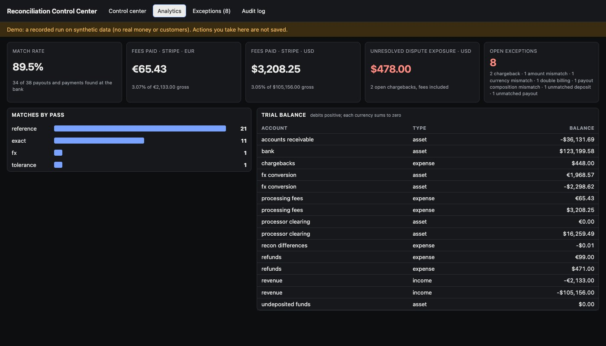
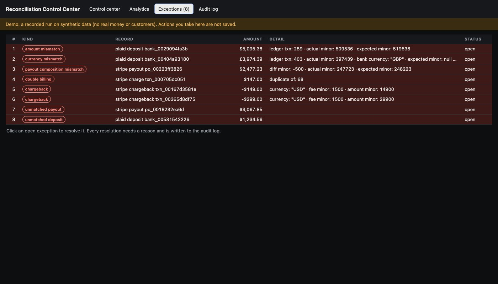

Python · Fintech backend · 2026-10
Can Software Match Every Payout to the Bank?
A reconciliation engine that pairs payment-processor payouts with bank deposits in four passes, books every movement in a double-entry Postgres ledger, and sends what it will not decide to a review queue. On a planted test month it matched 34 of 38 and flagged all 8 problems.

Built from a written blueprint as an MVP, on synthetic data: the month of payments is invented, with ten irregularities planted in it, so the numbers show that the engine finds what was planted, not how it does on real books. The Stripe, Plaid and QuickBooks connectors follow the documented API shapes and are tested against fake servers; they have never called the live services. One shared API token, no user accounts.
01 — The problem
A business that takes card payments has three records of the same money: what the payment processor says it collected and paid out, what the accounting system says customers paid, and what actually landed in the bank. They never line up by themselves: the processor pays out in daily lumps, keeps its fee, deposits arrive one to three days later, and sometimes a cent or a currency differs. Can software pair them up automatically, keep books that cannot go out of balance, and hand a person only the cases that need judgement?
This is the first of four product blueprints (a written specification for a sellable product) built end to end as a minimum version.
02 — What I built
A Python service on PostgreSQL with a React dashboard, all started by one docker compose up.
- Ingestion: workers poll Stripe, Plaid and QuickBooks from a job queue; CSV and Excel uploads pass a strict schema where one bad row rejects the file and names the row.
- Matching: four passes, from certain to less certain, then checks for payouts that do not add up, double billing and chargebacks.
- Ledger: double-entry, in integer cents; the database itself refuses an entry whose debits and credits differ.
- Safety: customer and bank identifiers encrypted before they are stored; an audit log that cannot be edited; every write in a SERIALIZABLE transaction.
- Dashboard: processor records on the left, bank deposits on the right, matched pairs linked, problems in amber and red.
03 — How it was built
- 01
Books that cannot go out of balance
In double-entry bookkeeping every movement of money is written twice: once as a debit, once as a credit, and the two must be equal. Instead of trusting the application to get that right, the rule lives in the database: a trigger runs when a transaction commits and rejects any journal entry whose debits and credits differ in any currency. Amounts are whole cents, never decimals. Ledger rows and the audit log reject every UPDATE, DELETE and TRUNCATE, so a correction is a new reversing entry.
HAVING sum(CASE direction WHEN 'D' THEN amount_minor ELSE -amount_minor END) <> 0 - 02
Match in four passes, most certain first
Pass 1 looks for the payout's id or trace number in the bank memo. Pass 2 pairs equal amounts inside a 3-day clearing window. Pass 3 allows a tiny difference (2 cents, or 1 basis point for large amounts) and books that difference instead of hiding it. Pass 4 handles a payout in one currency landing in another, within 1% of the known rate. A record leaves the pool as soon as it is matched or sent to review, and candidates are ranked so the result does not depend on the order the data arrived in.
_by_reference(open_l, open_b, cfg, result) - 03
Subtract the fees, and distrust a payout that does not add up
A payout should equal the charges in it, minus the processor's fees, minus refunds and chargebacks. The engine recomputes that sum for every payout. A payout that is short goes to review with the exact difference; so do two identical charges to the same customer within ten minutes, chargebacks, deposits nobody can explain and payouts that never arrived. Nothing is silently dropped: these land in an exceptions table for a person.
expected = sum(c.net_minor for c in parts[p.external_id]) - 04
Eight matchers at once, no double matches
If two workers match at the same moment, both could claim the same deposit. Every write runs in Postgres's strictest isolation level: when two transactions would conflict, the database aborts one and the code runs it again, now seeing what the winner did. A test starts eight matchers together on 60 unmatched pairs and checks that each is matched and posted exactly once. The job queue is a Postgres table too, so a job and its ledger rows commit together.
conn.isolation_level = psycopg.IsolationLevel.SERIALIZABLE - 05
A human in the loop, on the record
A supervisor can pair two records by hand or close an exception, and must type a reason. The match, the difference booked and the reason go into the audit log with the person's name. The dashboard is a split screen built on TanStack Table: click a matched row and a line connects it to its partner on the other side.
CREATE TRIGGER audit_log_immutable BEFORE UPDATE OR DELETE OR TRUNCATE ON audit_log
04 — Results
The planted month. 531 invented records: 38 payouts and payments, 37 bank deposits, 456 charges, refunds and chargebacks. Ten irregularities were planted. Eight need a person, and one run raised exactly those eight as exceptions. The other two are legitimate (a deposit one cent over, and a euro payout that landed in dollars) and were matched by the tolerance and currency passes, with the difference booked. In all, 34 of 38 payouts and payments were matched (89.5%).
| Outcome | Count |
|---|---|
| Matched by reference | 21 |
| Matched by exact amount | 11 |
| Matched within tolerance | 1 |
| Matched across currencies | 1 |
| Sent to review | 3 |
| Still inside the 3-day window | 1 |
What went to review: 2 chargebacks ($478.00 at stake with dispute fees), 1 double billing, 1 deposit $100 short, 1 deposit in a currency with no rate on file, 1 payout $5.00 less than its charges, 1 payout that never arrived, 1 deposit from an unknown sender.

The books balance. After the run every currency's ledger sums to zero, and the processor-clearing account holds exactly the payouts not yet matched plus the $5.00 the processor withheld. A test asserts both.
Checks. 55 automated tests cover chargebacks, refunds, multi-currency conversions, window edges and concurrent runs; 98% of the code is exercised; the same suite passes inside the Docker image. A speed test matches 20,000 pairs in memory in under 10 seconds.

05 — What I'd do next
- Run the three connectors against real sandbox accounts; that is where the surprises will be.
- Dated exchange rates, user accounts with roles, and keys held in a key-management service.
- Chain the audit log with hashes so tampering by a database administrator is detectable.